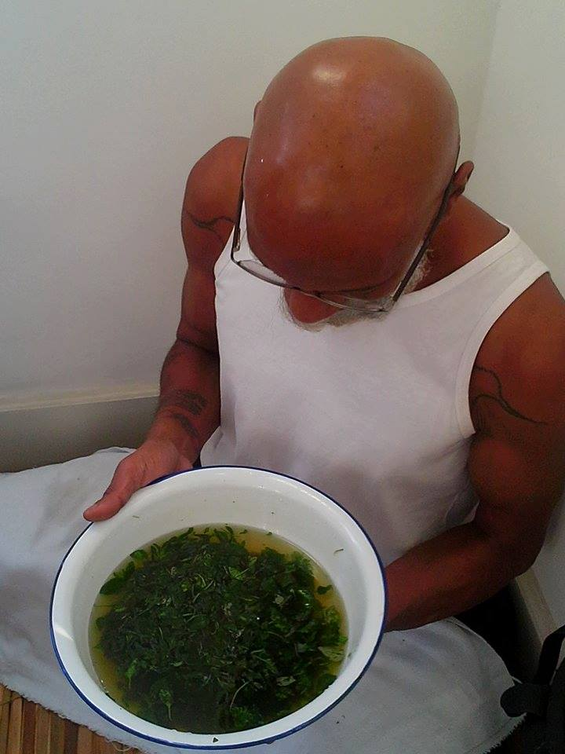
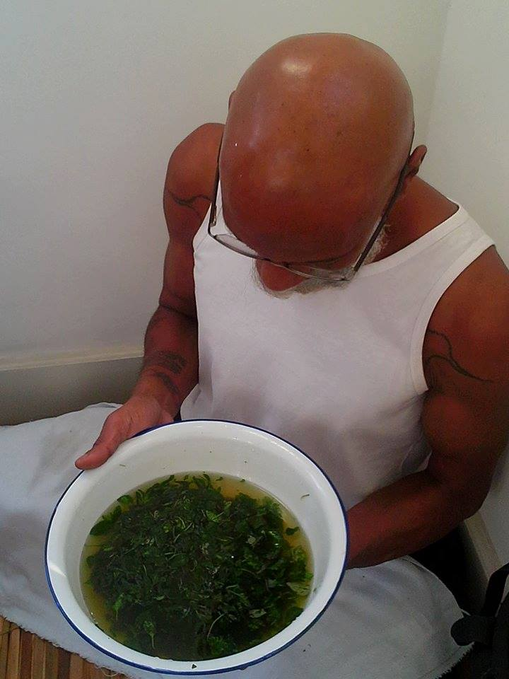

Entrevista e compilação de imagens por Paola Barreto e Cristiano Figueiró.

Você pode nos contar um pouco como começou a trabalhar com a relação entre botânica e eletrônica?


Você pode falar um pouco mais sobre a construção dos instrumentos que você inventa junto com as plantas?


O que você tem a nos dizer sobre a relação entre tecnologia e ritual?


 

Ainda sobre o ritual:


Você se considera um afrofuturista? Porque?

Pode nos falar sobre sua histórias com os sintetizadores, e como isso se relaciona também com sua atuação nas oficinas que você oferece?